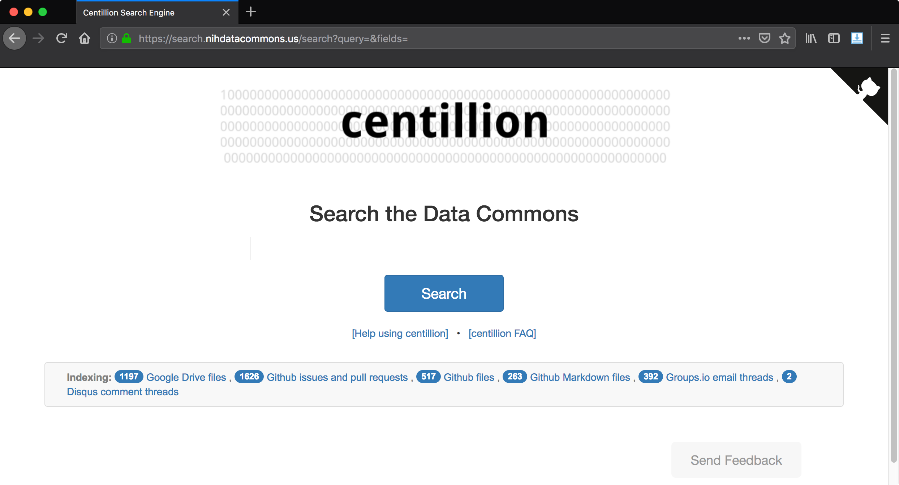
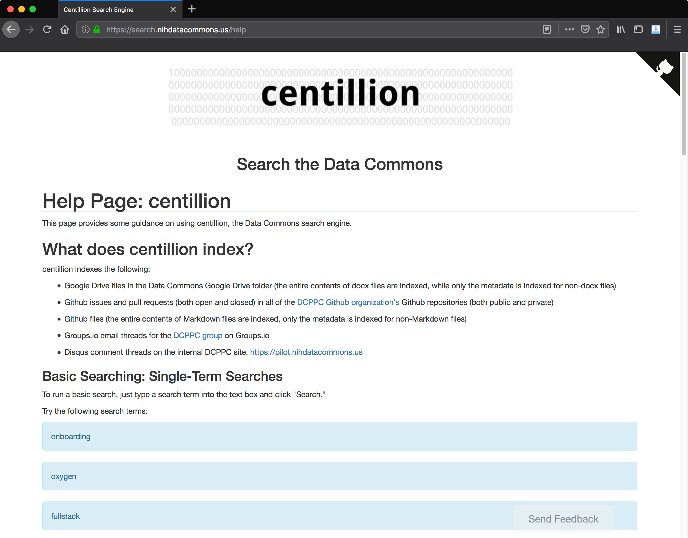
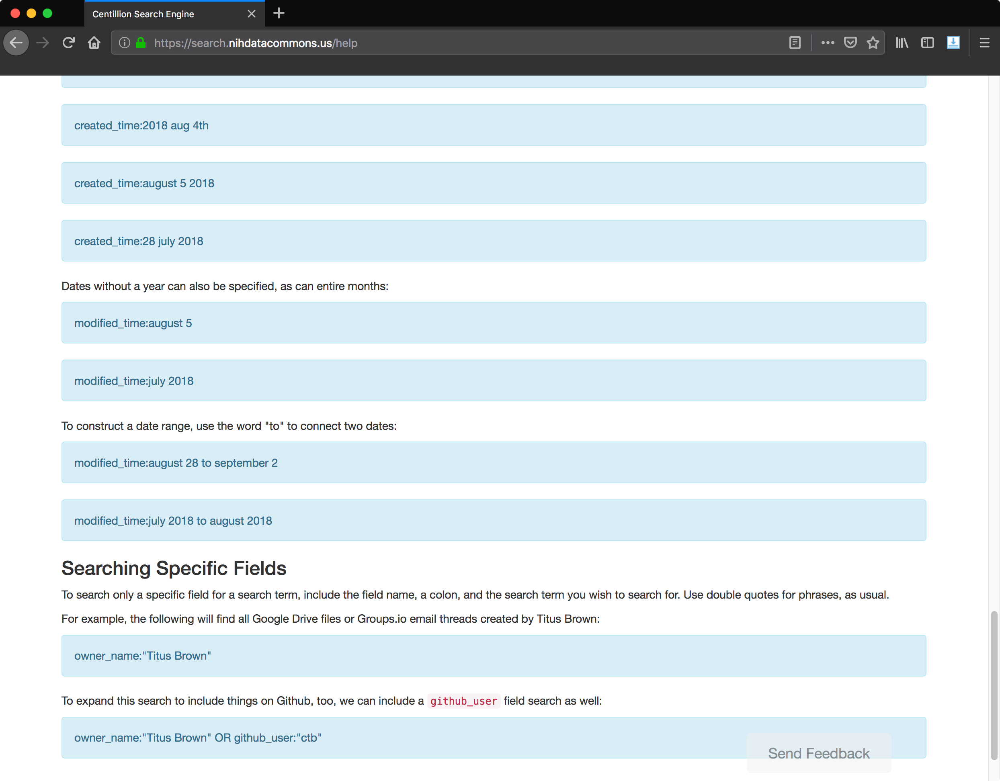
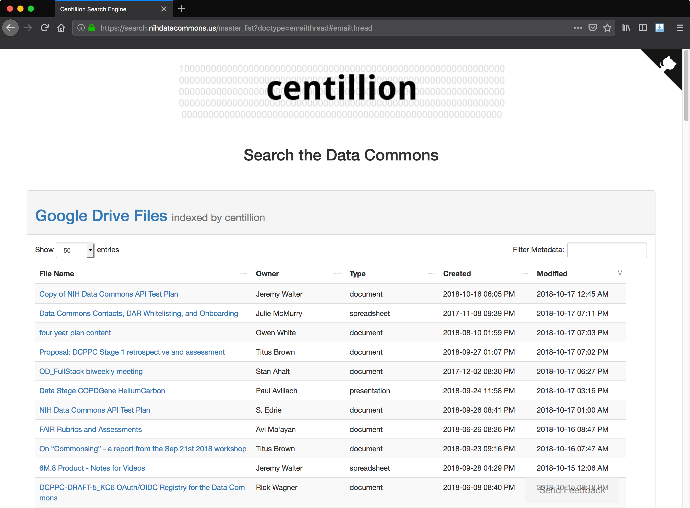
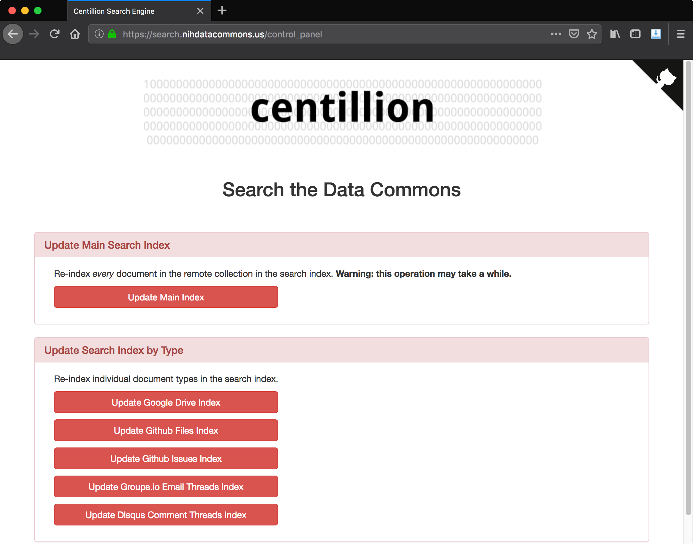

Frontend Web Interface
Frontend: User access control¶
Because centillion indexes internal and private documents for the Data Commons project, centillion implements a Github authentication layer on top of the Flask server. This authentication layer asks users to log in with their Github accounts, and if the user is a member of the DCPPC organization, they are granted access to the centillion website.
See the Github Authentication Layer page for details.
Frontend: Flask routes¶
Route: /search¶
By default, the user is redirected to the /search route, which provides a
text box in which the user can type their queries. Clicking on the centillion
logo at the top will always bring the user back to the search route.

Route: /help¶
Below the centillion logo, the user is provided links to an FAQ page and a help page. The help page provides the user with an explanation of how to search for items, an explanation of what items are indexed, and some example queries.

Users are also provided with guidance on running advanced queries, the use of search operators, and a list of fields, as well as several examples of date-based criteria:

Route: /faq¶
Below the centillion logo, the user is provided links to an FAQ page and a help page. The FAQ page provides the user with answers to frequently-asked questions. Several questions were added based on user feedback.
The FAQ covers important issues like licensing of content and information about what content is indexed and what content is not indexed. There is also information about how we protect the privacy of users.
Route: /master_list¶
There is a master list of all content indexed by centillion at the master list page, https://search.nihdatacommons.us/master_list.
A master list for each type of document indexed by the search engine is displayed in a table:

The metadata shown in these tables can be filtered and sorted by clicking on the respective columns.
Route: /control_panel¶
The centillion control panel is located at https://search.nihdatacommons.us/control_panel. The control panel allows you to rebuild the search index from scratch. The search index stores versions/contents of files locally, so re-indexing involves going out and asking each API for new versions of a file/document/web page. When you re-index the main search index, it will ask every API for new versions of every document. You can also update only specific types of documents in the search index.
